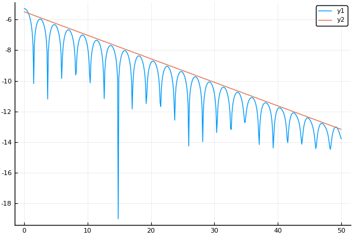

Vlasov-Ampere
Compute Landau damping by solving Vlasov-Ampere system.
\[ \frac{∂f}{∂t} + υ \frac{∂f}{∂x} - E(t,x) \frac{∂f}{∂υ} = 0\]
\[\frac{∂E}{∂t} = - J = ∫ fυ dυ\]
Algorithm
- For each $j$ compute discrete Fourier transform in $x$ of $(x_i,υ_j)$ yielding $f_k^n(υ_j)$,
- For $k ≂̸ 0$
- Compute $f^{n+1}_k(υ_j) = e^{−2iπ k υ Δt/L} f_n^k(υ_j),$
- Compute $ρ_k^{n+1} = Δ υ ∑_j f^{n+1}_k(υ_j),$
- Compute $E^{n+1}_k = ρ^{n+1}_k L/(2iπkϵ_0),$
- For $k = 0$ do nothing:
\[f_{n+1}(υ_j) = f^n_k(υ_j), E^{n+1}_k = E^n_k.\]
- Perform inverse discrete Fourier transform of $E^{n+1}_k$ and for each $j$ of $f^{n+1}_k (υ_j)$.
import Splittings: advection_x!, advection_v!, UniformMesh
import Splittings: @Strang, compute_rho, compute_e
using Plots, LinearAlgebra
pyplot()Plots.PyPlotBackend()Splittings.advection_x! — Function.advection_x!( f, meshx, meshv, dt)
Advection in x and compute electric field
∂ f / ∂ t − υ ∂ f / ∂ x = 0
∂E / ∂t = −J = ∫ fυ dυSplittings.advection_v! — Function.advection_v!( fᵀ, meshx, meshv, E, dt)
Advection in υ
∂ f / ∂ t − E(x) ∂ f / ∂ υ = 0
Apply this advection on transposed `f`function push_t!( f, fᵀ, meshx, meshv, e, dt)
transpose!(f,fᵀ)
advection_x!( f, meshx, meshv, e, dt)
transpose!(fᵀ,f)
endpush_t! (generic function with 1 method)function push_v!(fᵀ, meshx, meshv, e, dt)
advection_v!(fᵀ, meshx, meshv, e, dt)
endpush_v! (generic function with 1 method)function vm1d( nx, nv, xmin, xmax, vmin, vmax , tf, nt)
meshx = UniformMesh(xmin, xmax, nx, endpoint=false)
meshv = UniformMesh(vmin, vmax, nv, endpoint=false)
x = meshx.points
v = meshv.points
ϵ, kx = 0.001, 0.5
f = zeros(Complex{Float64},(nx,nv))
fᵀ= zeros(Complex{Float64},(nv,nx))
f .= (1.0.+ϵ*cos.(kx*x))/sqrt(2π) .* transpose(exp.(-0.5*v.*v))
transpose!(fᵀ,f)
e = zeros(Complex{Float64},nx)
ρ = compute_rho(meshv, f)
e .= compute_e(meshx, ρ)
nrj = Float64[]
dt = tf / nt
for i in 1:nt
push!(nrj, 0.5*log(sum(real(e).^2)*meshx.step))
@Strang( push_v!(fᵀ, meshx, meshv, e, dt),
push_t!(f, fᵀ, meshx, meshv, e, dt)
)
end
nrj
endvm1d (generic function with 1 method)nx, nv = 32, 64
xmin, xmax = 0., 4π
vmin, vmax = -6., 6.
tf = 80
nt = 600
t = range(0,stop=tf,length=nt)
plot(t, vm1d(nx, nv, xmin, xmax, vmin, vmax, tf, nt) )
plot!(t, -0.1533*t.-5.50)
savefig("va-plot.png"); nothing
This page was generated using Literate.jl.